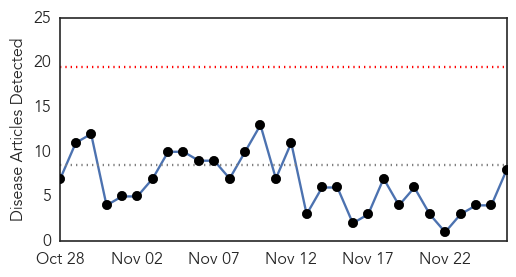
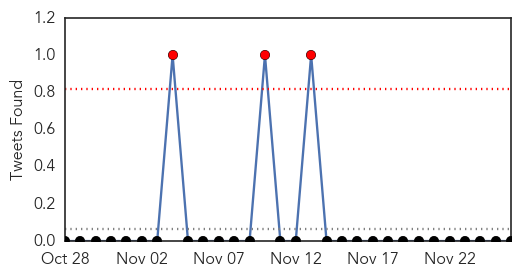
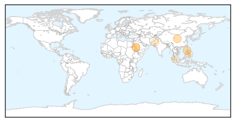
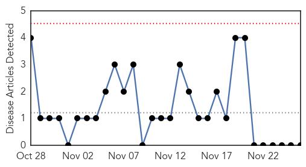

Dengue Fever
30-Day Web Trend
0 alerts, 0 warnings

30-Day Twitter Trend
3 alerts, 0 warnings

Article Locations
Article Confidences
Top Articles:
- 0.990
- WHO opposes use of malaria drug as dengue treatment
- 0.986
- 31 more Jaundice cases in Saraspur reported
- 0.864
- Dengue outbreak feared in JeddahHealthcare
- 0.806
- Jeddah deploys 570 workers to combat dengue mosquitoes
- 0.608
- Govt issues notices to 5 hospitals
- 0.598
- Raje directs medical dept to activate task force to contain seasonal diseases
- 0.507
- Cebu News, The Freeman Sections, The Freeman
- 0.504
- Malaysians high in awareness on Dengue but poor attitudes remain, says Subramaniam
Top Tweets:
-
No tweets found for Nov 26, 2014
Pertussis
30-Day Web Trend
0 alerts, 0 warnings

30-Day Twitter Trend
0 alerts, 0 warnings

Article Locations

Article Confidences

Top Articles:
-
No articles found for Nov 26, 2014
Top Tweets:
-
No tweets found for Nov 26, 2014